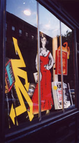

|
>reverse
media logic why
reverse media logic? Reversing media's logic of attraction -- media's essential function -- creates a point of critical distance. This vantage is completely outside the flux and flow of the global media-sphere and transcends false dichotomies of "good-for-you," "educational" media and "bad," "sensational" media. |
 |
contact | deflect demo | exoptic preview